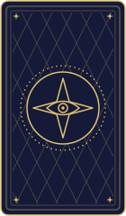
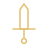
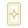
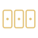
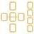
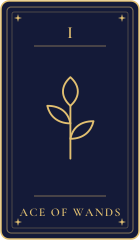
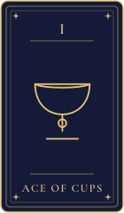
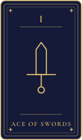
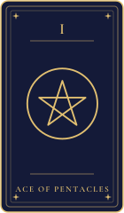

Design proposal
Making it plain that this is tarot.
Today the site leans on a zodiac wheel, moon phases and a strip of star signs, so it can read as astrology. These four directions move the look towards tarot cards, suits and the reader.
Nothing here is live. Every picture is original gold linework on the existing colours, type and spacing, and none copies a published deck. Pick a direction and it goes into DESIGN.md, the CSS and the site.
Why it reads as astrology
- The hero art is a zodiac wheel. The three tarot cards sit on it and are small.
- The signs strip names all twelve zodiac signs and the three steps use moon phases.
- The reader and share images carry no cards. Nothing outside the hero says tarot without reading the words.
- The hero eyebrow says "Tarot, read plainly", while the style guide says "Tarot spread readings". Aligning them is free.
Base: do these in any direction
Three small changes that make every page say tarot, whichever direction you choose.
Card back as the brand pattern

Use it on the loading screen, the upload zone, social images and as the card back in the hero deal. An eye in a four-point star keeps the site mark in it.
Tarot icons instead of moon phases
Photograph
Lay the cards flat and take a photo.
Identify
Every card is named, upright or reversed.
Read
A reading for each card in its position.
Suits instead of star signs
- Wands
- Cups

Swords- Pentacles
This replaces the Aries to Pisces strip on the home page. The crescent and star stay as the mark.
A. Suits and arcana
The smallest change. Keep the wheel but fade it, and give the dealt cards real tarot faces: a Roman numeral, a name and a double gold frame.
- Motifs (section 6): hero cards gain numerals, names and ornate frames. Wheel opacity drops.
- Components (section 5):
.tcardgets an optional numeral plate. - Principles: none change.
B. The fan
A clear break from astrology. Retire the zodiac wheel from the hero and fan a hand of cards in its place, with the card back used across the site.
- Motifs (section 6): the zodiac wheel moves to the loading screen only, or goes. The fan replaces the hero deal.
- Share images (sections 8, 13, 15): the wheel bleeding off the edge becomes the fan. All build scripts need a rerun.
- Principles: section 1 and the "generic astrological theme" line in the intro are reworded.
C. The reader's table
Puts the tarot reader in the picture. The reader sits at a table with a three-card spread, a deck and a candle. On the reading screen the avatar holds the cards.
.reader component.- Avatar (section 14): adds a fan of three cards and a single star above the brow. Still no name, backstory or first-person voice.
- Motifs (section 6): adds the table scene, candle and deck. No crystal ball, hands over a ball or hood.
- Principles: section 14 "no props" becomes "cards and a deck only". Plain voice is unchanged.
D. The spread diagram
Built on the word "spread". A Celtic Cross layout becomes the hero, and every reading shows numbered positions that match the diagram.
- Components (section 5): adds
.pos, a 2rem ring badge, to.reading__position. - Motifs (section 6): spread layouts (three-card, Celtic Cross) join the wheel and cards.
- Principles: none change.
The artwork
Fifteen icons on a 48px grid with a 1.5px gold stroke, matching the hero card faces. Cards are 7:12 with the gold edge, hairline and 8px radius from the design system.
- Wands
- Cups
- Swords
- Pentacles

Tarot card- Card fan
- Deck
- Eye

Three-card spread
Celtic Cross- Photograph
- Listen
- Reader
- Candle
- Site mark
- Card back
- The Star
- The Moon
- The Sun

Ace of Wands
Ace of Cups
Ace of Swords
Ace of Pentacles
Reader
Today's avatar, then the same figure holding cards.
What I would pick
Base plus A first: it is quick, reversible and fixes the signs strip, the steps and the hero cards. Then C for the reader, since you want tarot readers visible. B and D suit a bigger rebrand.
- The directions combine. Base, A and C fit together without conflict.
- On approval I update
DESIGN.md, the CSS and pages, rebuild the share, Facebook and Instagram images, bump the asset version and push to GitHub. - Regenerate the artwork any time with
python3 scripts/build-tarot-proposal.py.